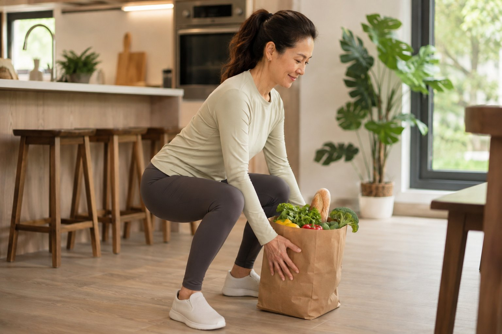

買菜、抱孫、搬東西腰好吃力？中年後省力用身體的發力技巧

從市場提兩袋菜回來，站在電梯前找鑰匙，才發現一側腰已經撐了一路。把袋子放下時，又得先找桌邊扶一下。
搬提時，物品離身體越遠，通常需要軀幹提供更大的力矩。屈髖屈膝和把物品移近，可以改變臀腿與腰背分工。先用空袋練習約 3 秒放下，比較近放與伸手遠放的感受。重量、握力和提放次數都會影響負擔，腰痠感不能用來判定受傷。
提菜搬東西為什麼腰特別吃力？
教室觀察。我們在教室會請學員用空手坐向椅子，看看下放最後一小段能不能放慢，再把這個節奏帶回提放。
一般運動衛教。物品和身體的距離、重量、路面及工作頻率都會影響負擔。單一彎腰角度不能預測受傷。
買菜、抱小孩和搬箱子，怎麼調整更順手？
👆 手機可左右滑動
| 看到的狀況 | 可以怎麼觀察 | 無法據此判定 |
|---|---|---|
| 菜袋偏一邊 | 減少單趟重量，或拆成兩袋並視情況換手。 | 左右腰背的傷勢 |
| 從地上搬箱 | 先靠近箱子，確認抓得穩，再起身或分批搬。 | 特定姿勢永遠安全 |
| 抱起小孩 | 先靠近，讓孩子能配合時再抱，轉向時用腳步帶動。 | 一種抱法適合所有人 |
坐到椅面前，最後幾公分怎麼控制？
影片文字摘錄（畫面）
示範者站在椅前屈髖屈膝，畫面對照落座前最後一小段，並呈現臀腿放慢下坐的方式。這是空手練習，影片未示範負重搬運。
若動作引起明顯疼痛、麻木或突然無力，先停止練習。症狀持續或加劇時，請尋求醫療評估。
延伸理解：彎腰做家事就腰痠？學會用髖鉸鏈分擔腰椎壓力的日常調整、腰痠是核心太弱還是下背太緊？先看懂骨盆中立與深層核心的支撐關係
常見問題
買菜、抱孫、搬重物時為什麼腰特別容易感到吃力？
物品離身體較遠時，軀幹通常需要更大的力矩；重量和時間也有影響。
搬提重物省力且不傷腰的三大黃金原則是什麼？
先看重量、距離和握力。把物品移近、縮短搬運距離、必要時分批。
抱孫子或幼童時，有什麼保護腰部與骨盆的技巧？
靠近再抱起，轉向時用腳步調整。孩子若突然掙動，先放回穩固位置。
日常買菜或採購重物時，該如何聰明分配負重？
減少單趟重量、兩手分提或使用購物推車。
為什麼知道「用腿不用腰」，實際搬東西時還是常常忘記做？
知道口訣與在忙碌時用得上是兩件事，可先在空手或輕物下熟悉節奏。
想把剛才的觀察整理成下一步？開始免費體態訊號掃描，從最困擾的日常動作填起。